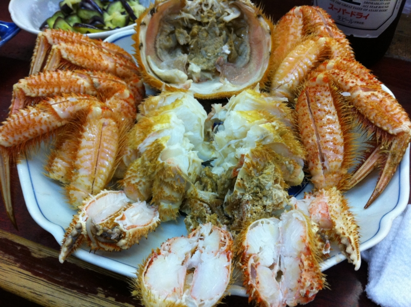
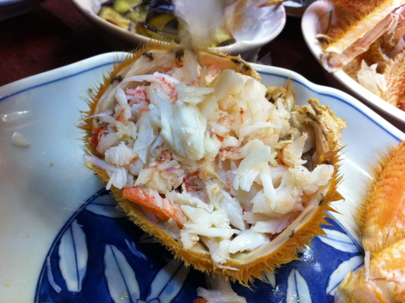
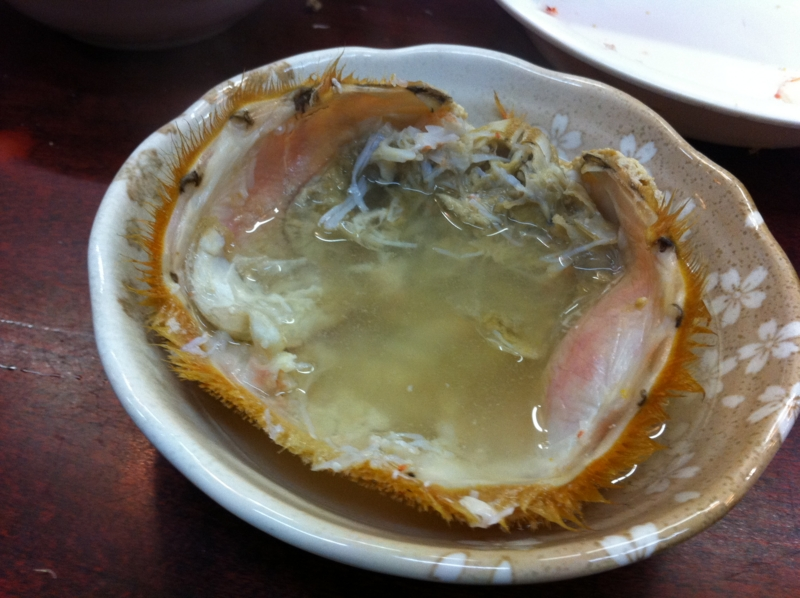

「くるま」でカニを買わされた
執筆日時：
昨日は仕事を頑張ったので、 foursquare :: 酒処 くるま :: 東京, 日本 に寄って独りで酒呑んでた。そしたら、大将が「ケガニがあるんだけどなー、今だったら安くしてしまいそうだなー」と聞こえるように独り言を言う。

いい加減面倒くさいので（！）、少し値切って隣の人と分けて食うことにした。

なんでかしらんけど、カニの肉はぜんぶ隣の人にほじってもらった。自分でほじるのもいいけど、こうやるとガブッとカニの肉をほうばれて、これはこれでイイ。

最後は甲羅で熱燗のんだ。なんか邪道な飲み方のような気もするけど、存外不味くはなかった。あとで甲羅を炙って飲むと、二度美味しいんだそうだ。そうやって人間はダメになるんだと思う。
小岩はダメな人が多いので、自分もダメでいいんだと思え、肩の力を抜いて、のんびりできる。それがイイと思った。
帰りは foursquare :: つけめん・らーめん つ～とん :: 江戸川区, 東京都 に寄ってつけ麺食べた。つけ麺も美味しいけれど、マスターとおしゃべりするが楽しい。何の話をしたのかはすっかり忘れてしまったのだけど、楽しかった。